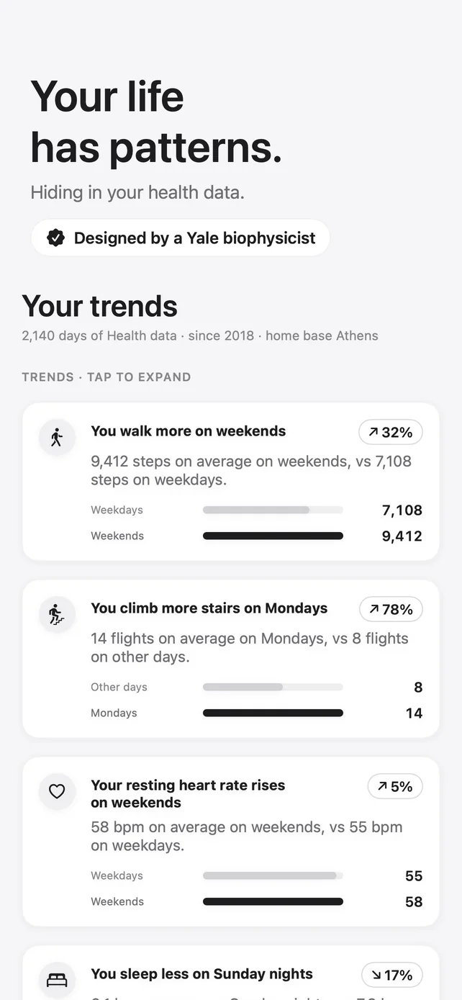
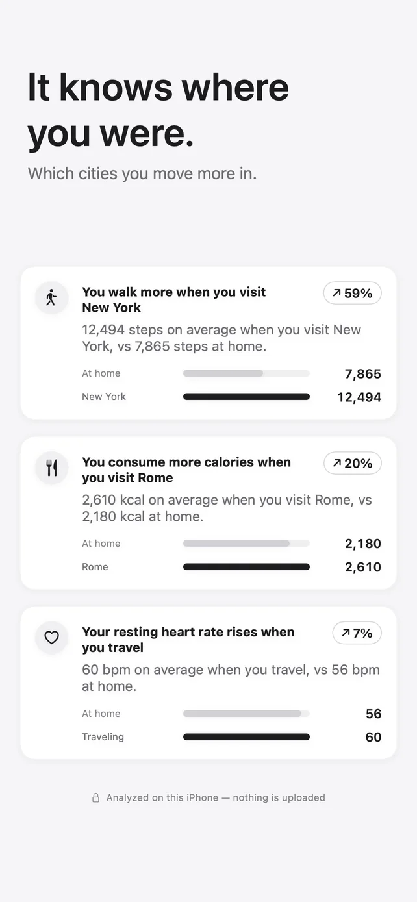
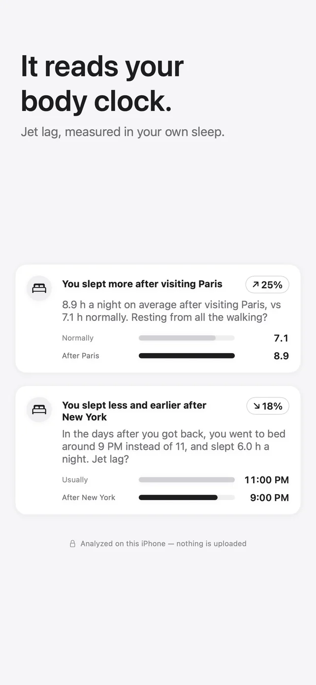
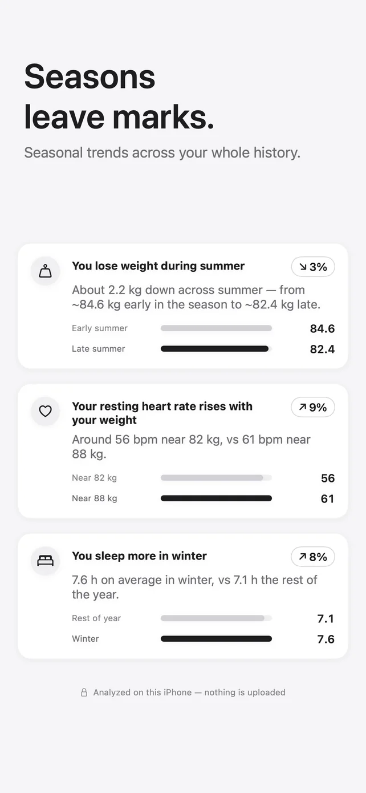
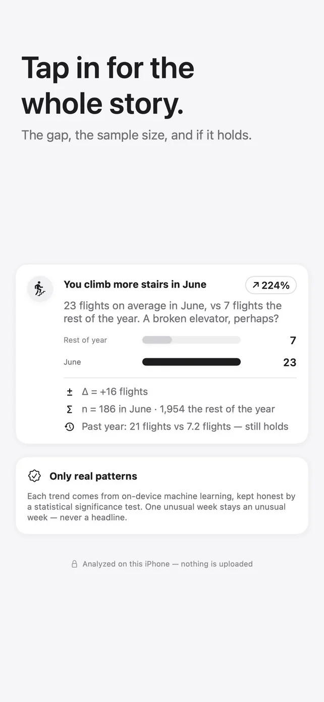
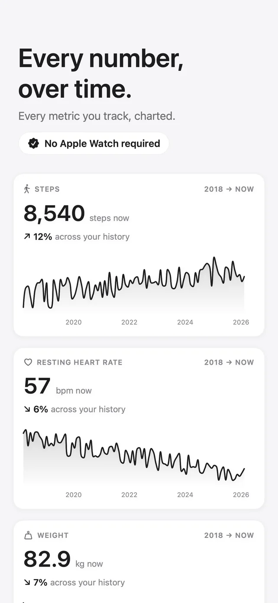
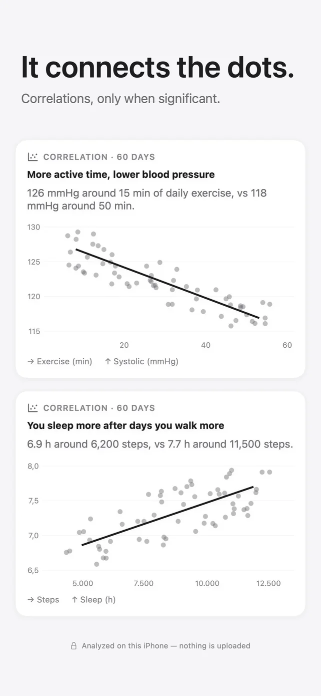
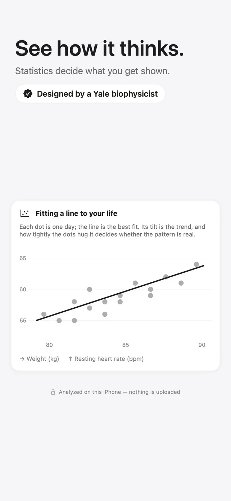
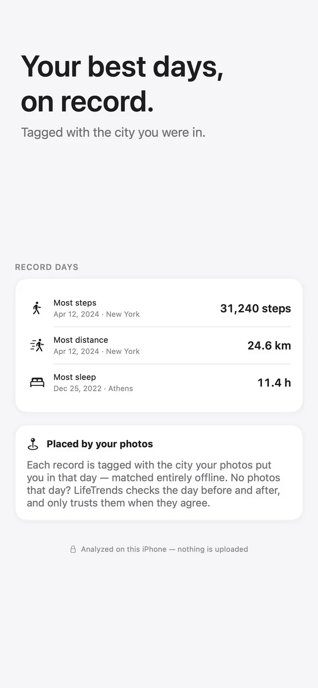

LifeTrends
The patterns hiding in your health data.









You walk more on weekends. You sleep less on Sunday nights. LifeTrends reads the Apple Health history already on your iPhone, tells you in plain English what is actually in it, and shows the numbers behind every claim.
Findings, not guesses
A pattern only appears when it is large enough to matter and unlikely to be chance. Thin evidence shows nothing.
Weekdays, seasons, body clock
Weekday against weekend, month by month across your whole history, and your daily rhythm hour by hour.
Trips and places
Worked out from photo dates and locations only, never the pictures, matched against cities built into the app.
Every number, charted
Each metric over your entire history, plus the correlations between them that hold up.
The whole story
Tap any finding for the gap, the sample sizes, and whether it still holds this year.
No score, no streaks
No readiness number, no coaching voice, no advice you did not ask for.
- Health data is read, analyzed and kept on your iPhone. Never uploaded.
- From Photos it reads only dates and locations, never the images.
- No account, no analytics, no ads, no tracking.
LifeTrends is not a medical device and does not give medical advice.